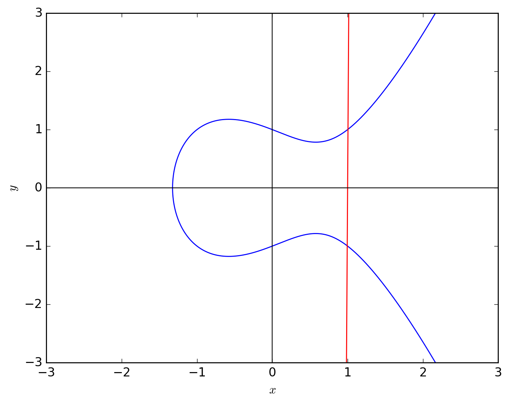

## Point Addition over Elliptic Curve
Basics of Point addition and what does it look like, geometrically, is already
dicussed. Let's try to calculate it given a curve.
For the sake of simplicity we assume the _Weierstrass Form_.
$$
y^2 = x^3 + ax + b; a, b \in \mathbb{Z} - {0}
$$
### Case 1: $P + Q$ where $P \neq Q$
$ P = (x_1, y_1), Q = (x_2, y_2) $
So the line through both the points is
$$
y = mx + c
$$
where the slope of the line is
$$
m = \frac{y_2 - y_1}{x_2 - x_1}
$$
Let's try to solve the straight line with the curve to find out all the solutions.
$$
\begin{align}
y^2 &= x^3 + ax + b \\
(mx + c)^2 &= x^3 + ax + b \\
m^2x^2 + 2mcx + c^2 &= x^3 + ax + b
\end{align}
$$
By rearranging $(3)$, This turns out to be
$$
x^3 - m^2x^2 + (a - 2mc)x + b - c^2 = 0
$$
Since the negative of sum of roots is equal to the co-efficient of $x^2$,so in the above equation.
$$
-\sum_{i=1}^{3}x_i = -m^2
$$
Observe, that we already have 2 points on the line, we are looking for the 3rd point.
And, these points are the roots of the equation $(3)$. Consider the 3rd point $R(x_3, y_3)$.
$$
\begin{align}
x_1 + x_2 + x_3 = -m^2 \\
x_3 = m^2 - x_1 - x_2
\end{align}
$$
To find $y_3$, we use the line.
$$
\begin{align}
\frac{y - y_1}{x - x_1} = m \\
y = m(x - x_1) + y_1
\end{align}
$$
Subsitiute point $R$ in $(7)$,
$$
\begin{align}
x_3 &= m^2 - x_1 - x_2 \\
y_3 &= m(x_3 - x_1) + y_1
\end{align}
$$
### Case 2: $P + Q$ where $P = Q$
$P = Q = (x_1, y_1)$
To find the line through this point we use the tangent at this point on the curve.
$$
m = \dfrac{dy}{dx} |_P
$$
We differentiate both the sides with respect to $x$
$$
\begin{align}
2y\dfrac{dy}{dx} &= 3x^2 + a \\
\dfrac{dy}{dx} &= \frac{3x^2 + a}{2y}
\end{align}
$$
The slope at point $P$ is
$$
m = \frac{3x_1^2 + a}{2y_1}
$$
We have the slope now, we can calculate the line as for Case $1$.
We have the Point $R$, so the addition is $-R$, i.e. $(x_3, -y_3)$.
### Introduction of the Galois Field
You might have seen that the slopes are fractions. To perform calculations on
elliptic curves, we restrict ourselves to integers and in a ring of integers.
So, we use a prime field $\mathbb{GF(p)}$, i.e. all calculations are done within
$[0, p - 1]$.
This allows us to calculate fractions as integers within the field as all operations
in this obey their own Group laws.
This makes the curve as
$$
\begin{align}
y^2 &\equiv x^3 + ax + b \pmod{p} \\
m &\equiv (y_2 - y_1)(x_2 - x_1)^{-1} \pmod{p} or \\
m &\equiv (3x^2 + a)(2y)^{-1} \pmod{p}
\end{align}
$$
The inverse can be calculated using [Fermat's last theorem](https://en.wikipedia.org/wiki/Fermat%27s_little_theorem)
$$
\begin{align}
a^{p-1} &\equiv 1 \pmod{p}; p \in primes \\
a^{p-2} &\equiv a^{-1} \pmod{p}
\end{align}
$$
### Python implementation
This pseudo implementation only handles the addition of non-Zero points.
```python
def add(p, q):
"""Add 2 points p, q of the type Point in field GF(P).
Arguments:
Point : First point.
Point : Second point.
Returns:
Point : Addition of the point.
"""
if p.x == q.x: return ZERO
if p == q:
m = (3 * pow(p.x, 3, P) + a) * pow(2*p.y, P-2, P)
else:
m = (q.y - p.y) * pow(q.x - p.x, P-2, P)
m = m % P
x = pow(m, 2, P) - p.x - q.x
y = m * (x - p.x) + p.y
x = x % P
y = -y % P
return Point(x, y)
```
----
### Subtraction
Inversion is simple, in this case. $ P - Q = R $, To find $R$ we just compute
$ P + (-Q) $ as regular addition.
----
#### An interesting observation
What if there is a non-tangent line through 2 points on the curve $P$ and $Q$
which never meets the curve again?
For example,

Curve $y^2 = x^3 - x + 1$; Line $y = 200(x - 1)$
The line is not parallel to the $Y$ axis, but close to it. So will it intersect
at the 3rd point?
Visually the answer might be no, we have a concret method to prove it that it will.
#### Proof:
Note that all the co-efficients of the curve and the line are integers.
Which implies that if we solve the 2 curves, it will still be integers which we
see in equation $(3)$.
$$
x^3 - m^2x^2 + (a - 2mc)x + b - c^2 = 0
$$
Now, this equation has to have 3 roots, either real or complex. From the geometrical
representation, we already know that it has 2 points, or 2 roots which are real.
Which implies that it has taken the form:
$$
y = A(x - x_1)(x - x_2)(x - z); A, x_1, x_2 \in \mathbb{R}
$$
Now, if $z \in \mathbb{C}$, when we expand the equation, we are bound to get
and imaginary term, which will contradict having an equation having all real
coefficients, hence, $z \in \mathbb{R}$ too. Which means it will intersect at
the 3rd point too.
Now, you might have thoughts, what if the line is veritical, it cuts at 2 points.
That's simple because the equation reduces to:
$$
y^2 = x_1^3 + ax_1 + b
$$
This can have at max $2$ values in $y$, hence, $2$ solutions only.